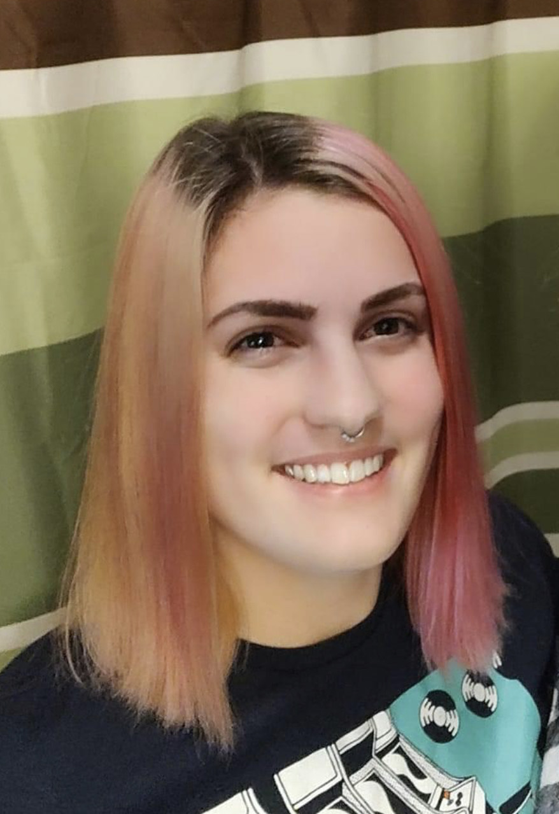
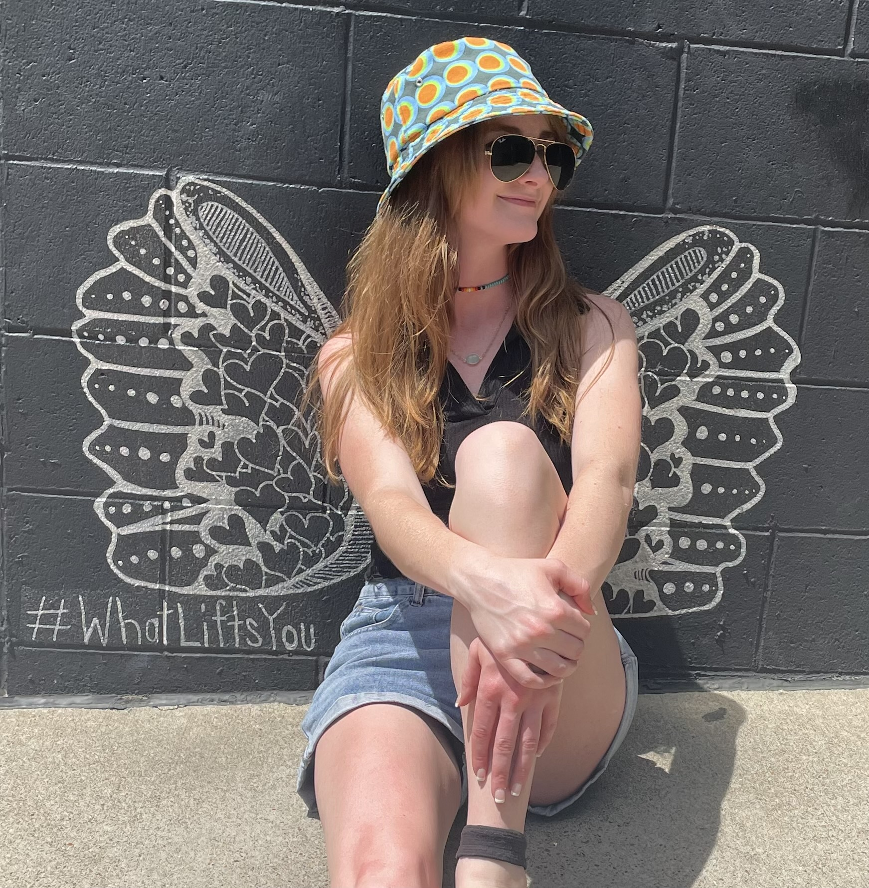
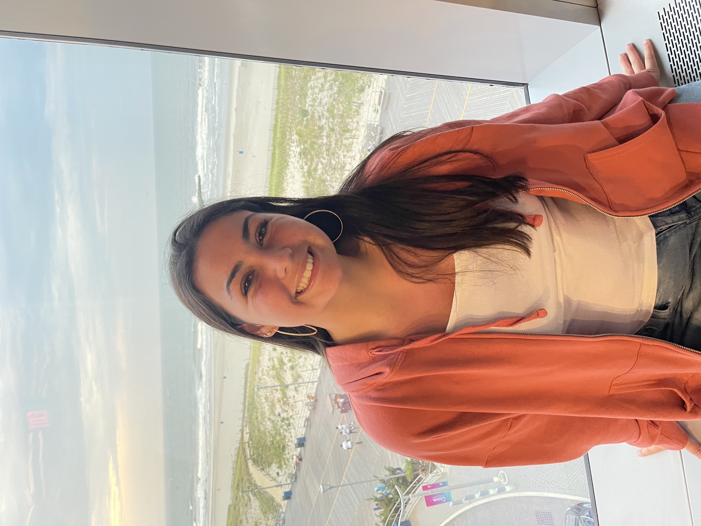

Aspyn Call
Programmer
Aspyn is a Computer Science and New Media student at the University of Maine, as well as a freelancer that specializes in game development and web design. They enjoy playing video games and watching anime. They also play the violin and are learning Japanese as a second language!

Ashley King
Writer/Designer
Ashley is a New Media major with a minor in graphic design. Ashley’s focus is on visual art and design. Ashley enjoys designing websites, photography, and digital art.

Lindsey Whiting
Writer/Designer
Lindsey Whiting is a third year New Media student at the University of Maine. In addition to her major course of study, she is minoring in both Dance and Film & Video. She is involved in many on campus organizations and also holds a leadership position within the dance department. After college, she hopes to pursue a career that integrates New Media and Dance.
